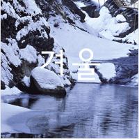

<!DOCTYPE html>
  <html lang="ko">
  <head>
    <meta charset="UTF-8">
    <meta http-equiv="X-UA-Compatible" content="IE=edge">
    <meta name="viewport" content="width=device-width, initial-scale=1.0">
    <title>switch~case</title>

    <script>
      // var num1 = Number(prompt("1 ~ 4까지 좋아하는 숫자를 입력하세요",""));
      // var result_1;
      // switch (num1) {
      //   case 1:
      //   result_1 = "1입력";
      //   break;
      //   case 2:
      //   result_1 = "2입력";
      //   break;
      //   case 3:
      //   result_1 = "3입력";
      //   break;
      //   case 4:
      //   result_1 = "4입력";
      //   break; 
      //   default:
      //   alert("1 ~ 4까지만 입력하세요");
      //   // result_1 = "다시 입력"   
			// 	// window.location.reload();
			// 	location.reload();
      //   break;    
      // }
      // document.write(result_1);

    // var num2 = Number(prompt("숫자를 입력하세요 1 ~ 100"));
    // switch(num2 % 2) {
    //   case 0:
		// 		if (num2 == 0) {
		// 			document.write("0 입니다.");
		// 		}
		// 		else if (num2 < 0 || num2 > 100) {
		// 			alert("1 ~ 100까지의 수를 입력해주세요.")
		// 			document.location.reload();
		// 		}
		// 		else {
		// 			document.write("짝수입니다.");
		// 		}
    //     break;
    //   case 1:
		// 		if (num2 < 0 || num2 > 100) {
		// 			alert("1 ~ 100까지의 수를 입력해주세요.")
		// 			document.location.reload();
		// 		}
		// 		else {
		// 			document.write("홀수입니다.");
		// 		}
		// 		break;
		// 	default:
		// 		// document.write("Nan... retry")
		// 		alert("1 ~ 100까지의 수를 입력해주세요.")
		// 		document.location.reload();
		// 		break;
    // }

		// 좋아하는 계절의 번호를 입력하세요.
		// 1. 봄 | 2. 여름 | 3. 가을 | 4. 겨울
		//  출력 1. roll1_1.gif | 2. roll2_1.gif | 3. roll3_1.gif | 4. roll4_1.gif
		// 이미지 (oo)을 좋아합니다.
		// 다시 입력하세요.
// 		var select = Number(prompt("1. 봄 | 2. 여름 | 3. 가을 | 4. 겨울 - 중 선택" + "\n(select Number or Word)"));
// // 		var select = Number(prompt(`1. 봄 | 2. 여름 | 3. 가을 | 4. 겨울 - 중 선택  
// // (select Number or Word)`));
// 		var sel = select;
// 		switch (sel) {
// 			case 1:
// 			case "봄":
// 			case "1.봄":
// 			case "1. 봄":	
// 				document.write("" + "를 좋아합니다.")
// 				break;
// 			case 2:
// 			case "여름":
// 			case "2.여름":
// 			case "2. 여름":		
// 				document.write("" + "를 좋아합니다.")
// 				break;
// 			case 3:
// 			case "가을":
// 			case "3.가을":
// 			case "3. 가을":	
// 				document.write("" + "를 좋아합니다.")
// 				break;
// 			case 4:
// 			case "겨울":
// 			case "4.겨울":
// 			case "4. 겨울":		
// 				document.write("" + "를 좋아합니다.")
// 				break;	
// 			default:
// 			// document.write("다시 입력")
// 			alert("1~4 사이의 수를 입력해 주세요:)")
// 			location.reload();
// 		}

    </script>
  </head>
  <body>
    
  </body>
</html>